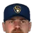
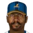
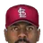

Real MLB history, mapped onto this league's franchises
Champion:  Los Angeles Dodgers (63-47)
Los Angeles Dodgers (63-47)
American League
East Division
| Team | W | L | PCT | GB | Finish | Postseason |
|---|---|---|---|---|---|---|
 Milwaukee Brewers Milwaukee Brewers | 62 | 47 | .569 | - | 1st | Playoffs |
 Baltimore Orioles Baltimore Orioles | 59 | 46 | .562 | 1 | 2nd | |
 Detroit Tigers Detroit Tigers | 60 | 49 | .550 | 2 | 3rd | |
 New York Yankees New York Yankees | 59 | 48 | .551 | 2 | 4th | Playoffs |
 Boston Red Sox Boston Red Sox | 59 | 49 | .546 | 2½ | 5th | |
 Cleveland Guardians Cleveland Guardians | 52 | 51 | .505 | 7 | 6th | |
 Toronto Blue Jays Toronto Blue Jays | 37 | 69 | .349 | 23½ | 7th |
West Division
| Team | W | L | PCT | GB | Finish | Postseason |
|---|---|---|---|---|---|---|
 Oakland Athletics Oakland Athletics | 64 | 45 | .587 | - | 1st | Playoffs |
 Texas Rangers Texas Rangers | 57 | 48 | .543 | 5 | 2nd | |
 Chicago White Sox Chicago White Sox | 54 | 52 | .509 | 8½ | 3rd | |
 Kansas City Royals Kansas City Royals | 50 | 53 | .485 | 11 | 4th | |
 California Angels California Angels | 51 | 59 | .464 | 13½ | 5th | |
 Seattle Mariners Seattle Mariners | 44 | 65 | .404 | 20½ | 6th | |
 Minnesota Twins Minnesota Twins | 41 | 68 | .376 | 23½ | 7th |
National League
East Division
| Team | W | L | PCT | GB | Finish | Postseason |
|---|---|---|---|---|---|---|
 St. Louis Cardinals St. Louis Cardinals | 59 | 43 | .578 | -1.5 | 1st | Playoffs |
 Montreal Expos Montreal Expos | 60 | 48 | .556 | - | 2nd | |
 Philadelphia Phillies Philadelphia Phillies | 59 | 48 | .551 | ½ | 3rd | |
 Pittsburgh Pirates Pittsburgh Pirates | 46 | 56 | .451 | 11½ | 4th | |
 New York Mets New York Mets | 41 | 62 | .398 | 17½ | 5th | |
 Chicago Cubs Chicago Cubs | 38 | 65 | .369 | 21 | 6th |
West Division
| Team | W | L | PCT | GB | Finish | Postseason |
|---|---|---|---|---|---|---|
 Cincinnati Reds Cincinnati Reds | 66 | 42 | .611 | - | 1st | Playoffs |
| Los Angeles Dodgers | 63 | 47 | .573 | 4 | 2nd | Champion |
 Houston Astros Houston Astros | 61 | 49 | .555 | 6 | 3rd | |
 San Francisco Giants San Francisco Giants | 56 | 55 | .505 | 11½ | 4th | |
 Atlanta Braves Atlanta Braves | 50 | 56 | .472 | 15½ | 5th | |
 San Diego Padres San Diego Padres | 41 | 69 | .373 | 26 | 6th |
American League
Home runs
- 22
 Bobby Grich LAA
Bobby Grich LAA - 22Dwight Evans BOS
- 22Eddie Murray BAL
- 22Tony Armas OAK
- 21

Gorman Thomas MIL
RBI
- 78Eddie Murray BAL
- 76Tony Armas OAK
- 72German Oglivie MIL
- 71Dwight Evans BOS
- 68Dave Winfield NYY
Hits
- 135
 Rickey Henderson OAK
Rickey Henderson OAK - 134Galloway Lansford BOS
- 133Cecil Cooper MIL
- 133

Willie Wilson KCM - 132Tom Paciorek SEA
Runs
- 89Rickey Henderson OAK
- 84Dwight Evans BOS
- 70Cecil Cooper MIL
- 64Toby Harrah CLE
- 62Mickey Rivers DAL
Stolen bases
- 56Rickey Henderson OAK
- 43Julio Cruz SEA
- 36Ron LeFlore SBS
- 34Willie Wilson KCM
- 29Miguel Dilone CLE
Doubles
- 35Cecil Cooper MIL
- 29Al Oliver DAL
- 28Tom Paciorek SEA
- 27Thomson American Baseball League BAL
- 27Moreno Brett KCM
Triples
- 9Strange American Baseball League MIN
- 7Moreno Brett KCM
- 7Willie Wilson KCM
- 7Rickey Henderson OAK
- 7Harold Baines SBS
Walks
- 85Dwight Evans BOS
- 73Dwayne Murphy OAK
- 70Levinski Kemp DET
- 64Rickey Henderson OAK
- 62Lewis Aikens KCM
Total bases
- 215Dwight Evans BOS
- 211Tony Armas OAK
- 206Cecil Cooper MIL
- 206Tom Paciorek SEA
- 202Eddie Murray BAL
WAR (hitters, OOTP)
- 5.6Dwight Evans BOS
- 4.5Rickey Henderson OAK
- 4.4Bobby Grich LAA
- 3.8Tom Paciorek SEA
- 3.8Perez Lemon SBS
Wins
- 14Steve McCatty OAK
- 14Pete Vuckovich MIL
- 14Jack Morris DET
- 14Dennis Martinez BAL
- 13Dennis Leonard KCM
ERA
- 2.33Steve McCatty OAK
- 2.72Larry Gura KCM
- 2.99Dennis Leonard KCM
- 2.99Rick Langford OAK
- 3.03Milt Wilcox DET
Strikeouts
- 127Ramirez Barker CLE
- 108Britt Burns SBS
- 107Dennis Leonard KCM
- 107Bert Blyleven CLE
- 104Ron Guidry NYY
Saves
- 28Rollie Fingers MIL
- 20
 Rich Gossage NYY
Rich Gossage NYY - 18Dan Quisenberry KCM
- 17Harris High Minors MIN
- 13Kevin Saucier DET
Innings
- 201.2Dennis Leonard KCM
- 198.0Jack Morris DET
- 195.1Rick Langford OAK
- 185.2Steve McCatty OAK
- 183.2Dave Stieb TOR
WHIP
- 1.01Larry Gura KCM
- 1.08Steve McCatty OAK
- 1.14Dave Stieb TOR
- 1.17Jack Morris DET
- 1.20Mike Norris OAK
K/9
- 4.8Dennis Leonard KCM
- 4.4Dennis Martinez BAL
- 4.4Steve McCatty OAK
- 4.4Jack Morris DET
- 4.4Dave Stieb TOR
Complete games
- 18Rick Langford OAK
- 16Steve McCatty OAK
- 15Jack Morris DET
- 12Mike Norris OAK
- 12Larry Gura KCM
Shutouts
- 4Ken Forsch LAA
- 4Steve McCatty OAK
- 4Doc Medich DAL
- 4Richard Dotson SBS
- 3Ramirez Barker CLE
WAR (pitchers, OOTP)
- 4.8Ramirez Barker CLE
- 4.3Dennis Leonard KCM
- 4.1Bert Blyleven CLE
- 3.9Dave Righetti NYY
- 3.4Dennis Eckersley BOS
National League
Home runs
- 31Mike Schmidt PHI
- 24Andre Dawson MON
- 22Goerdt Kingman NYK
- 22George Foster CIN
- 18George Hendrick STL
RBI
- 91Mike Schmidt PHI
- 90George Foster CIN
- 75Bill Buckner CHC
- 68Gary Carter MON
- 67Gahan Matthews PHI
Hits
- 140Pete Rose PHI
- 131Bill Buckner CHC
- 129Dave Concepcion CIN
- 128Dusty Baker LAD
- 123Ken Griffey CIN
Runs
- 78Mike Schmidt PHI
- 73Pete Rose PHI
- 71Andre Dawson MON
- 67George Hendrick STL
- 65Ken Griffey CIN
Stolen bases
- 71
 Tim Raines MON
Tim Raines MON - 39Omar Moreno PIT
- 30Chrysler Scott MON
- 26DePaula American Baseball League CIN
- 26Andre Dawson MON
Doubles
- 35Bill Buckner CHC
- 34Shouse American Baseball League SDP
- 28Dave Concepcion CIN
- 27Keith Hernandez STL
- 25Chris Chambliss ATL
Triples
- 12Gene Richards SDP
- 12Craig Reynolds HOU
- 9Tom Herr STL
- 8Larry Herndon SFS
- 8

Garry Templeton STL
Walks
- 73Mike Schmidt PHI
- 66Joe Morgan SFS
- 61Keith Hernandez STL
- 59Gahan Matthews PHI
- 59Jason Thompson PIT
Total bases
- 228Mike Schmidt PHI
- 218Andre Dawson MON
- 215George Foster CIN
- 202Bill Buckner CHC
- 191George Hendrick STL
WAR (hitters, OOTP)
- 6.5Mike Schmidt PHI
- 5.0Andre Dawson MON
- 4.3George Foster CIN
- 4.1Tim Raines MON
- 3.8Gahan Matthews PHI
Wins
- 14Tom Seaver CIN
- 13Steve Carlton PHI
- 13Fernando Valenzuela LAD
- 12Steve Rogers MON
- 12Mario Soto CIN
ERA
- 2.42Steve Carlton PHI
- 2.48Fernando Valenzuela LAD
- 2.54Tom Seaver CIN
- 2.82Joe Niekro HOU
- 3.29Mario Soto CIN
Strikeouts
- 180Fernando Valenzuela LAD
- 179Steve Carlton PHI
- 151Mario Soto CIN
- 140Nolan Ryan HOU
- 115Bill Gullickson MON
Saves
- 25Bruce Sutter STL
- 21Greg Minton SFS
- 18Neil Allen NYK
- 17Ponder Camp ATL
- 13Tom Hume CIN
Innings
- 192.1Fernando Valenzuela LAD
- 190.0Steve Carlton PHI
- 175.0Mario Soto CIN
- 166.1Tom Seaver CIN
- 166.0Joe Niekro HOU
WHIP
- 1.05Fernando Valenzuela LAD
- 1.12Tom Seaver CIN
- 1.13Steve Carlton PHI
- 1.16Mario Soto CIN
- 1.19Joe Niekro HOU
K/9
- 8.5Steve Carlton PHI
- 8.4Fernando Valenzuela LAD
- 7.8Mario Soto CIN
- 4.7Tom Seaver CIN
- 4.2Joe Niekro HOU
Complete games
- 11Fernando Valenzuela LAD
- 10Steve Carlton PHI
- 10Mario Soto CIN
- 8Jerry Reuss LAD
- 7Steve Rogers MON
Shutouts
- 8Fernando Valenzuela LAD
- 5Bob Knepper HOU
- 4Burt Hooton LAD
- 3Bruce Berenyi CIN
- 3Steve Rogers MON
WAR (pitchers, OOTP)
- 5.7Steve Carlton PHI
- 5.5Fernando Valenzuela LAD
- 5.4Bill Gullickson MON
- 4.7Don Sutton HOU
- 4.5Nolan Ryan HOU
From players_league_leader.csv (top five shown, ties included as stored). The file's category codes are unlabeled; the site shows only the categories it could match to season stat lines. The team logo is the player's franchise that season (most games).
Most Valuable Player
| League | Pos | Player | Team |
|---|---|---|---|
| American | Rollie Fingers | Milwaukee Brewers | |
| National | Mike Schmidt | Philadelphia Phillies |
Cy Young Award
| League | Pos | Player | Team |
|---|---|---|---|
| American | Rollie Fingers | Milwaukee Brewers | |
| National | Fernando Valenzuela | Los Angeles Dodgers |
Rookie of the Year
| League | Pos | Player | Team |
|---|---|---|---|
| American | Dave Righetti | New York Yankees | |
| National | Fernando Valenzuela | Los Angeles Dodgers |
Reliever of the Year
| League | Pos | Player | Team |
|---|---|---|---|
| American | Rollie Fingers | Milwaukee Brewers | |
| National | Bruce Sutter | St. Louis Cardinals |
World Series MVP
| League | Pos | Player | Team |
|---|---|---|---|
| American | Baez Yeager | Los Angeles Dodgers | |
| American | Ron Cey | Los Angeles Dodgers | |
| American | Pedro Guerrero | Los Angeles Dodgers |
Gold Gloves
| League | Pos | Player | Team |
|---|---|---|---|
| American | P | Mike Norris | Oakland Athletics |
| American | C | Jim Sundberg | Dallas Griffins |
| American | 1B | Mike Squires | Southside Black Sox |
| American | 2B | Frank White | Kansas City Monarchs |
| American | 3B | Barreras Bell | Dallas Griffins |
| American | SS | Alan Trammell | Detroit Wolverines |
| American | CF | Dwayne Murphy | Oakland Athletics |
| American | CF | Rickey Henderson | Oakland Athletics |
| American | CF | Dwight Evans | Boston Red Sox |
| National | P | Steve Carlton | Philadelphia Phillies |
| National | C | Gary Carter | Montreal Royeaux |
| National | 1B | Keith Hernandez | St. Louis Cardinals |
| National | 2B | Manny Trillo | Philadelphia Phillies |
| National | 3B | Mike Schmidt | Philadelphia Phillies |
| National | SS | Ozzie Smith | San Diego Padres |
| National | CF | Kozlowski Maddox | Philadelphia Phillies |
| National | CF | Dusty Baker | Los Angeles Dodgers |
| National | CF | Andre Dawson | Montreal Royeaux |
Silver Sluggers
| League | Pos | Player | Team |
|---|---|---|---|
| American | C | Munoz Low Minors | Southside Black Sox |
| American | 1B | Cecil Cooper | Milwaukee Brewers |
| American | 2B | Bobby Grich | Anaheim Angels |
| American | 3B | Galloway Lansford | Boston Red Sox |
| American | SS | Rick Burleson | Anaheim Angels |
| American | CF | Rickey Henderson | Oakland Athletics |
| American | CF | Dave Winfield | New York Yankees |
| American | CF | Dwight Evans | Boston Red Sox |
| American | DH | Al Oliver | Dallas Griffins |
| National | P | Fernando Valenzuela | Los Angeles Dodgers |
| National | C | Gary Carter | Montreal Royeaux |
| National | 1B | Pete Rose | Philadelphia Phillies |
| National | 2B | Manny Trillo | Philadelphia Phillies |
| National | 3B | Mike Schmidt | Philadelphia Phillies |
| National | SS | Dave Concepcion | Cincinnati Reds |
| National | CF | George Foster | Cincinnati Reds |
| National | CF | Dusty Baker | Los Angeles Dodgers |
| National | CF | Andre Dawson | Montreal Royeaux |
Award codes in players_awards.csv are unlabeled; names were matched from the winners (e.g. 2001: Bonds and Ichiro for code 5, Randy Johnson and Clemens for code 4, Ichiro and Pujols for code 6, Rivera and Benitez for code 13, Johnson and Schilling for code 15). Code 7 is the Gold Glove and code 11 the Silver Slugger (one per position); code 9 is the All-Star selections.
American League 31 selections
National League 30 selections
From players_awards.csv code 9 (matches league_history_all_star.csv counts). Position is the player's listed primary position, not necessarily where he played in the game; team is his franchise that season (most games).
Seasons before 2002 are real MLB history from the OOTP export, mapped by OOTP onto this league's 30 original franchises (club names are as they were in that season). 2002 is this universe. Player names are as the export stores them (apart from a few renamed in this universe since this dump, such as Babe Ruth): OOTP gives some historical players generated names (the 586-homer career is filed under “Legendre Robinson”), and the site keeps them. Every player links to a page: 2002 players to their season pages, everyone else to a historical career page.